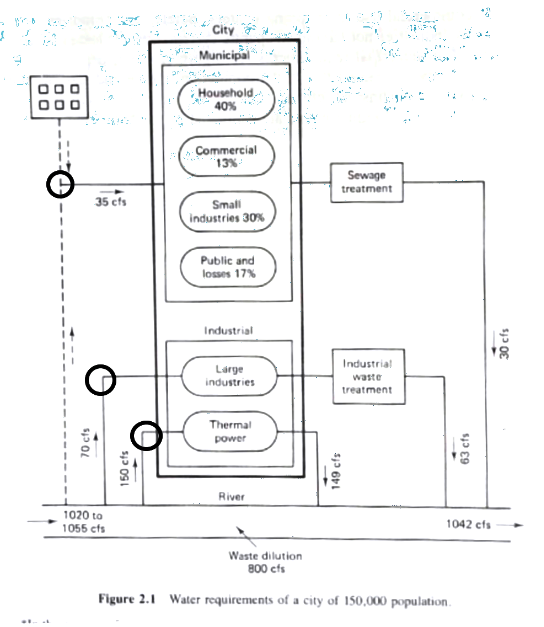
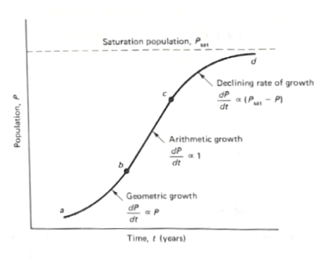
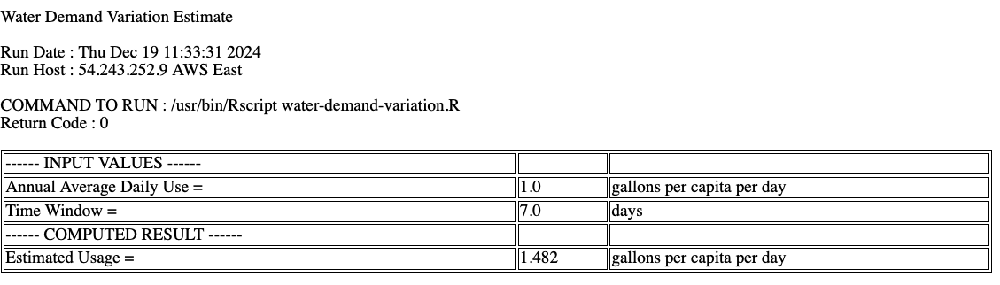

4. Demand Estimation#
Course Website
Demand estimates are required to size water systems to meet some purpose, or establish that the particular system is infeasible.
Warning
This section is incomplete
Readings#
Additional Readings
Gupta, R. S. 2017. Hydrology and Hydraulic Systems. Waveland Press, Inc. pp 1-19
Land Development Handbook 4ed. 2019. The most useful $200 you will spend in Civil Engineering - this is an upgrade to the copy I used for the excerpt above. If you buy one get a physcial book - they don’t break, work anytime the lights are on, and you can use it for squashing bugs.
Frauenthal, J.C. 1980. Introduction to Population Modeling. Birkhäuser, Boston. (Internet Archive has a copy one can borrow, but no free PDFs on the mighty internet)
Videos#
Lesson Outline#
topic1
topic2
topic3
Water Supply Demands#
Estimates of demand are used to size water systems to meet some purpose, or establish that the particular system is infeasible.
The purposes can include:
Municipal uses (drinking water, fire suppression, commercial use, …)
Industrial use (separate from municipal)
Agriculture use
Waste Assimilation use
Navigation uses (outside scope this course)
Types of Demand#
Withdrawal: Water removed from a stream, lake, or aquifer to supply users. This water is moved to satisfy the use.
Non-Withdrawal: On-site uses such as navigation or recreation where water remains in its original location.
Consumptive: The portion of withdrawal that is no longer available for further use, as it is incorporated into crops, animals, or industrial processes.
Water Needs for a City#
Consider some generic urban area (figure from Gupta)

Categories of Requirements#
Municipal Requirements (Drinking Water Supply)
Large Industrial Requirements (Potable and Non-Potable)
Waste Assimilation Requirements
Municipal Requirements#
A relatively simple relationship establishes municipal requirements:
Where:
\(V_{req}\) is the volume required,
\(P_{t}\) is the population at some moment,
\(U_{per person}\) is the per person usage.
Thus the two components required to estimate demand is how many people have to be supplied, and how much each person uses.
Notice time is in the relationship. Conservation practices can influence \(U\), and growth or decline in \(P\) can also influence the volume required.
An alternative form is:
Where:
\( V \): Volume
\( P \): Population
\( \frac{V}{P} \): Volume per person
Population Forecasting#
Note
Population forecasting is usually outside realm of engineers; they can surely handle the arithmetic, but converting census estimates, and economic development incentives is beyond most engineer’s experiences. We can make provisional estimates for feasibility, then bring in profe$$ionals for the complete analysis.
Graphical Methods#
Graphical representations can be used for near future population estimates.

Recent history is used to determine where the target population is on the growth curve
Short-term forecasting includes:
Declining growth
Arithmetic growth
Geometric growth
Note
The curve above is identical in structure to resource capacity limited growth that you learned in Environmental Engineering (CE 3309). Examples that will follow such a curve are yeast cells in a sugar rich environment. Dextrose (glucose) is a simple sugar and is the primary energy source for yeast. It is readily taken up by yeast cells and metabolized through glycolysis, followed by either fermentation (anaerobic conditions) or respiration (aerobic conditions). In aerobic conditions the yeast cells will multiply until nearly all the dextrose is used, then the growth rate declines dramatically. The asymptote is determined to some extent by the amount of sugar originally present.
An alternative to actually drawing curves (although quite useful) is to determine the portion of interest on the curve and perform the arithmetic.
Mathematical Methods#
Geometric Growth: \( P_2 = P_1 \cdot e^{K_P (t_2 - t_1)} \)
\( K_P \): Exponential growth constant (units of recipricol time)
Arithmetic Growth: \( P_2 = P_1 + K_A (t_2 - t_1) \)
\( K_A \): Slope of the growth curve (units of recipricol time)
Declining Growth: \( P_2 = P_1 + (P_{sat} - P_1) \cdot (1 - e^{-K_D (t_2 - t_1)}) \)
\( K_D \): Declining rate constant (units of recipricol time)
Longer-Term Forecasting#
Longer-term population forecasting is a critical aspect of urban and regional planning. It helps in predicting future water demand and ensuring sustainable resource management. This approach uses historical census data and more complex techniques to estimate population growth over decades.
Comparison Forecasting:#
Projects growth by comparing with geographically similar areas.
Ratio Method (Transposition):
Ratio: \( P_t = P_0 \cdot \frac{P'_t}{P'_0} \)
Where:
\( P_t \): Future population of the target area
\( P_0 \): Current population of the target area
\( P'_t \): Future population of the reference area
\( P'_0 \): Current population of the reference area
Example: If a nearby city with similar characteristics has shown consistent growth, its population ratios can help estimate the target area’s growth.
Correlation Method:
Uses statistical techniques, such as ordinary least squares (OLS), to fit a predictive equation.
Formula:
Correlation: \( P_t = a \cdot P'_t + b \) Where:
\( P_t \): Target area’s population
\( P'_t \): Reference area’s population
\( a, b \): Coefficients derived from historical data
Example: This method is particularly useful when multiple reference areas are available for comparison.
Component Techniques#
Component-based forecasting divides population dynamics into smaller measurable parts to understand the influences of births, deaths, and migration.
Births and Deaths:
Birth rate (B) and death rate (D) determine the natural increase or decrease in population.
Formula: \( P_t = P_0 + (B - D) \cdot \Delta t \)
Net Migration (M):
Accounts for people moving in or out of the area.
Formula: \( P_t = P_0 + (B - D \pm M) \cdot \Delta t \) Where:
\( M \): Net migration rate
\( \Delta t \): Time interval in years
Composite Models:
Combine multiple demographic factors (e.g., age distribution, economic conditions).
These models require significant data and computational resources but provide more accurate predictions.
Advantages of Longer-Term Forecasting#
Provides a detailed understanding of population trends.
Helps design infrastructure that meets future needs.
Incorporates economic and social factors for robust predictions.
Note
Long-term forcasting using population dynamics models is a specalist sport. In the 1980’s the solutions to the dynamic systems were by means of Routh Arrays.
The Routh Array is a mathematical tool used in control theory and differential equations to determine the stability of a system by analyzing the characteristic equation of a linear system. In the context of population dynamics models, it can be adapted to assess the stability of equilibrium points in systems governed by differential equations.
Application in Population Dynamics
Population dynamics models often involve differential equations describing the growth or decline of a population. Stability analysis determines whether the population will converge to an equilibrium (e.g., carrying capacity) or diverge (e.g., unbounded growth or extinction).
The Routh Array helps in this analysis by examining the characteristic equation derived from the linearized system of differential equations around an equilibrium point. The characteristic equation typically takes the form:
where \(s\) represents the eigenvalues, and \(a_i\) are coefficients related to the model’s parameters. (You did similar work with Lagrangian polynomials in Engineering Mathematics)
Steps in Using the Routh Array:
Construct the Characteristic Polynomial: Derive it from the population model’s linearized system.
Build the Routh Array: Organize the coefficients of the polynomial into a tabular form. Populate the rows of the array using a recursive formula derived from the coefficients.
Determine Stability:
Check the signs of the first column of the array.
If all entries in the first column are positive, the system is stable (all roots have negative real parts).
Any sign change indicates potential instability (roots with positive real parts).
Advantages:
Efficient Stability Check: The Routh Array provides stability information without explicitly solving for eigenvalues.
Insightful for Complex Models: Useful for models with higher-order dynamics where solving characteristic equations is challenging.
Example in Population Dynamics
Consider a population model with logistic growth and additional dynamics, leading to a characteristic equation like:
Using the Routh Array, we can determine whether small perturbations around the equilibrium will return to stability or diverge. Limitations
Applicable only to linearized models (near equilibrium points).
Requires the system’s differential equations to be representable in polynomial form.
This method provides a systematic way to analyze stability, making it a valuable tool in theoretical studies of population dynamics and their control mechanisms.
Today (2023) we would simply build a numerical model of the dynamic system, and perturb the model and see how it responds. In the 1980’s computers were not readily available, so mathematicians invented these clever techniques.
Water Usage#
Components#
Average Daily Demand
Hourly Variation
Fire Demand
Per Capita Usage#
Design life varies by system component.
Maintenance and replacement must account for component failures within the overall design life.
Average Daily Usage#
Categories#
Residential: Includes drinking, landscaping, and street cleaning. Typically, two demand peaks (morning and evening).
Commercial: Hotels, offices, and shopping centers. Demand is less variable.
Industrial: Fabrication, cooling, and refining. Varies by industry.
Estimation Tools#
USGS Circular 1200: Maps and tables for gross estimates.
Approximations: Preliminary designs.
Per-Connection Calculations: Based on flow rates and plumbing capacity.
Image Placeholder#
Usage Variation#
Seasonal, daily, and special events (e.g., Super Bowl halftime).
Rule-of-thumb estimate for usage variation:
\[ \%U = \frac{180\%}{T^{0.1}} \]\( T \): Duration in days
Water Demand Variation Tool (Online Calculator that implements the above expression, with some input guidance)

#### Python Template for Estimation
import math
def usage_multiplier(duration_days):
"""Calculate usage multiplier U based on duration."""
if duration_days <= 0:
raise ValueError("Duration must be greater than 0.")
U = 1.80 / (duration_days ** 0.1)
return U
# Example usage
duration = 7 # duration in days
U = usage_multiplier(duration)
print(f"Usage multiplier U for {duration} days: {U:.2f} gallons per capita per day")
Usage multiplier U for 7 days: 1.48 gallons per capita per day
Fire Demand#
High withdrawal rates required during emergencies.
Fire flow calculation (cite source):
- \[ Q_{fire,GPM} = 1020 \cdot P \cdot (1 - 0.01P) \]
\( P \): Population in thousands
import math
def fire_demand(population_thousands):
"""Calculate fire flow demand based on population."""
if population_thousands <= 0:
raise ValueError("Population must be greater than 0.")
Q_fire = 1020 * population_thousands * (1 - 0.01 * population_thousands)
return Q_fire
# Example usage
population = 25 # Population in thousands
Q_fire = fire_demand(population)
print(f"Fire flow demand for a population of {population}k: {Q_fire:.2f} GPM")
Fire flow demand for a population of 25k: 19125.00 GPM
Industrial Demand#
Self-supply for large industries or community-supplied estimates based on usage rates:
Thermal Power: 80 gal/kWh
Steel Production: 35,000 gal/ton
Petroleum Refining: 770 gal/barrel
Waste Assimilation Demand#
Estimated using methods like TMDL or DO Sag.
Preliminary values (Gupta pp. 19-22):
- \[ Q_W = \frac{Q_S}{40 - 0.38 \cdot \%T} \]
import math
def wasteflow(Q_stream,treatment):
"""Calculate waste flow demand based on source flow and treatment fraction."""
if treatment <= 0:
raise ValueError("treatment percent be greater than 0.")
Q_waste = Q_stream / (40 - 0.38 * treatment)
return Q_waste
# Example usage
Q_stream = 40 # stream flow in MGD
treatment = 60 # treatment percentage
Q_waste = wasteflow(Q_stream,treatment)
print(f"Receiving Stream Flow before Discharge {Q_stream:.2f} MGD")
print(f"Treated Sewage Assimilative Capacity {treatment}%: {Q_waste:.2f} MGD")
print(f"Total Stream Flow after Discharge {Q_waste+Q_stream:.2f} MGD")
Receiving Stream Flow before Discharge 40.00 MGD
Treated Sewage Assimilative Capacity 60%: 2.33 MGD
Total Stream Flow after Discharge 42.33 MGD
Irrigation and Other Demands#
Categories#
Irrigation: Biomass, evapotranspiration, and losses.
Other Uses:
Hydropower: Run-of-river or storage release.
Navigation: River regulation or artificial canals.